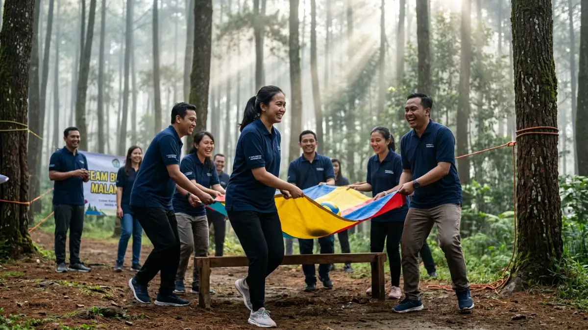

Paket gathering Malang adalah paket acara kebersamaan yang menggabungkan aktivitas outbound, team building, atau camping dengan fasilitas venue, konsumsi, dan akomodasi di kawasan Malang dan sekitarnya. Paket ini umumnya dipilih oleh perusahaan, komunitas, maupun keluarga besar yang ingin mengadakan acara kebersamaan sekaligus menikmati udara sejuk dataran tinggi Malang.
DAFTAR ISI
- 1. Apa Itu Paket Gathering dan Untuk Siapa Cocoknya?
- 2. Apa Saja Jenis Aktivitas dalam Paket Gathering Malang?
- 3. Fasilitas Apa Saja yang Biasanya Termasuk dalam Paket Gathering?
- 4. Berapa Kisaran Biaya Paket Gathering di Malang?
- 5. Bagaimana Cara Memilih Paket Gathering yang Tepat?
- 6. Apa Saja Kesalahan Umum saat Memesan Paket Gathering?
- 7. Kesimpulan
- FAQ
1. Apa Itu Paket Gathering dan Untuk Siapa Cocoknya?
Paket gathering adalah layanan acara terintegrasi yang mencakup aktivitas, tempat, dan logistik dalam satu penawaran. Paket ini cocok untuk perusahaan yang ingin mengadakan acara tahunan, komunitas yang ingin mempererat hubungan antaranggota, maupun keluarga besar yang ingin berkumpul di suasana alam terbuka.
Malang dipilih karena letaknya di dataran tinggi dengan suhu udara yang relatif sejuk dibandingkan kota-kota di dataran rendah, serta memiliki banyak kawasan wisata alam seperti perbukitan, kebun, dan area perkemahan yang mendukung berbagai jenis aktivitas gathering.
Secara umum, kebutuhan gathering dapat dibedakan menjadi tiga kategori utama: gathering yang berorientasi pada kekompakan tim (team building), gathering yang berorientasi pada tantangan fisik dan keberanian (outbound), serta gathering yang berorientasi pada kebersamaan santai di alam terbuka (camping atau family gathering).
2. Apa Saja Jenis Aktivitas dalam Paket Gathering Malang?
Jenis aktivitas dalam paket gathering Malang umumnya mencakup permainan kelompok, tantangan fisik ringan hingga menengah, dan sesi refleksi bersama fasilitator. Ketiganya dapat dikombinasikan sesuai tujuan acara.
Beberapa kategori aktivitas yang umum ditawarkan:
- Aktivitas team building: permainan kolaboratif, simulasi pemecahan masalah, dan diskusi kelompok yang bertujuan meningkatkan komunikasi serta kepercayaan antaranggota tim.
- Aktivitas outbound: permainan yang melibatkan tantangan fisik seperti flying fox, war game, atau rintangan alam, biasanya bertujuan melatih keberanian dan kerja sama di bawah tekanan.
- Aktivitas camping: kegiatan berkemah, api unggun, dan permainan santai yang lebih menekankan kebersamaan tanpa tekanan kompetisi tinggi.
- Aktivitas family gathering: permainan ringan yang dapat diikuti lintas usia, mulai dari anak-anak hingga orang dewasa.
Pemilihan jenis aktivitas sebaiknya mempertimbangkan komposisi peserta, karena aktivitas fisik berat kurang sesuai untuk peserta lanjut usia atau anak kecil.

Aktivitas outbound dalam paket gathering Malang. (Ilustrasi)3. Fasilitas Apa Saja yang Biasanya Termasuk dalam Paket Gathering?
Fasilitas standar dalam paket gathering umumnya mencakup venue, peralatan permainan, fasilitator, konsumsi, dan dokumentasi acara. Sebagian vendor juga menawarkan akomodasi menginap sebagai fasilitas tambahan.
Rincian fasilitas yang umum ditemukan:
- Venue outdoor atau semi-outdoor yang sudah termasuk sewa tempat dan izin penggunaan lahan.
- Fasilitator atau instruktur yang memandu jalannya permainan dan sesi refleksi.
- Peralatan permainan seperti tali, bola, papan rintangan, atau alat outbound lainnya.
- Konsumsi berupa makan siang, snack, atau paket makan sesuai durasi acara.
- Dokumentasi berupa foto atau video kegiatan.
- Akomodasi menginap, biasanya tersedia sebagai paket tambahan untuk gathering dua hari satu malam atau lebih.
Sebelum memesan, pastikan untuk menanyakan secara rinci fasilitas apa saja yang sudah termasuk dalam harga paket dan mana yang dikenakan biaya tambahan.
4. Berapa Kisaran Biaya Paket Gathering di Malang?
Biaya paket gathering di Malang dapat bervariasi tergantung jumlah peserta, jenis aktivitas, durasi acara, dan tingkat fasilitas yang dipilih. Semakin lengkap fasilitas dan semakin kompleks aktivitas yang dipilih, umumnya biaya per peserta juga semakin tinggi.
Beberapa faktor yang memengaruhi biaya:
- Jumlah peserta, karena sebagian vendor menerapkan harga per orang dengan skema tingkatan (semakin banyak peserta, harga per orang bisa lebih efisien).
- Durasi acara, apakah one day trip atau menginap.
- Jenis aktivitas, karena aktivitas outbound dengan alat khusus umumnya membutuhkan biaya operasional lebih tinggi dibandingkan aktivitas team building sederhana.
- Musim dan hari pelaksanaan, karena akhir pekan atau musim liburan biasanya memiliki tarif yang berbeda dibandingkan hari kerja biasa.
Untuk mendapatkan gambaran biaya yang akurat, sebaiknya konfirmasi langsung ke beberapa vendor gathering di Malang dan bandingkan penawaran mereka berdasarkan kebutuhan spesifik acara.
5. Bagaimana Cara Memilih Paket Gathering yang Tepat?
Cara memilih paket gathering yang tepat adalah dengan menyesuaikan tujuan acara, jumlah dan profil peserta, anggaran yang tersedia, serta reputasi vendor sebelum menentukan pilihan akhir.
Langkah-langkah yang dapat dipertimbangkan:
- Tentukan tujuan utama acara, apakah untuk membangun kekompakan tim, sekadar refreshing, atau merayakan pencapaian tertentu.
- Sesuaikan jenis aktivitas dengan profil peserta, termasuk usia, kondisi fisik, dan preferensi.
- Tetapkan anggaran dan bandingkan beberapa penawaran vendor dengan cakupan fasilitas yang setara.
- Periksa pengalaman dan portofolio vendor, misalnya melalui ulasan sebelumnya atau contoh dokumentasi acara.
- Tanyakan rencana cadangan apabila terjadi kondisi cuaca yang tidak mendukung, mengingat sebagian aktivitas bersifat outdoor.
- Pastikan aspek keselamatan, seperti standar peralatan dan pengalaman fasilitator, sudah dikonfirmasi sebelum acara berlangsung.
6. Apa Saja Kesalahan Umum saat Memesan Paket Gathering?
Kesalahan umum saat memesan paket gathering meliputi tidak mengonfirmasi rincian fasilitas secara jelas, memilih aktivitas yang tidak sesuai profil peserta, dan tidak mempertimbangkan rencana cadangan cuaca.
Beberapa kesalahan yang sering terjadi:
- Tidak menanyakan detail apa saja yang termasuk dan tidak termasuk dalam harga paket.
- Memilih aktivitas fisik berat tanpa mempertimbangkan kondisi kesehatan peserta.
- Mengabaikan aspek transportasi menuju lokasi, terutama untuk venue yang berada di area pegunungan dengan akses jalan tertentu.
- Tidak memiliki rencana cadangan jika cuaca berubah, mengingat sebagian besar aktivitas outbound bersifat outdoor.
- Memesan terlalu mendekati tanggal acara sehingga pilihan venue dan tanggal menjadi terbatas.
7. Kesimpulan
Paket gathering Malang menawarkan kombinasi aktivitas outbound, team building, atau camping dengan fasilitas venue dan konsumsi dalam satu paket. Pemilihan paket yang tepat sebaiknya mempertimbangkan tujuan acara, profil peserta, anggaran, serta reputasi vendor.
Untuk memahami perbedaan lebih detail antara camping, team building, dan outbound, baca artikel Camping, Team Building, atau Outbound? Ini Perbedaan dan Kapan Memilihnya.
Untuk memahami perbedaan tujuan outbound dan team building secara khusus, baca Outbound atau Team Building? Pahami Perbedaan dan Tujuannya.
Sedangkan bagi yang mencari ide permainan untuk acara keluarga, dapat membaca Kegiatan Outbound untuk Family Gathering: Ide Permainan dan Susunan Acara.